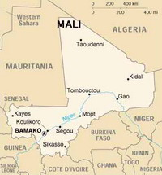
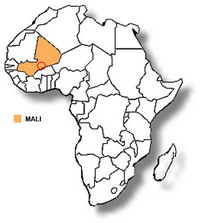

小雷音
冯冯
去去来来. / .誊录
西游记书内有一段讲玄奘大师西行，来到一处高山，忽然看见祥光蔼蔼，彩雾纷纷，有一所楼台殿阁，隐隐钟磬悠扬，就唤行者去看是个什么去处，行者抬头一看，珍楼宝座，寂散天香，青松翠竹，霞光缥缈，彩色飘飘，朱栏玉户，画栋雕梁，鸟啼丹树，鹤饮石泉，钟磬舒徐，帘卷轻烟，红尘不刮，净土道场！
行者禀道：“师父，观此景象，似是雷音，却又路道差池。我们到那厢，决不可擅入。”
三藏说：“莫非就是灵山？休误了我诚心，担搁我来意。”
长老来到山门前，只见“雷音寺”三个大字，慌得滚下马来，倒在地下就拜，口中骂行者：“泼猢狲！明明是雷音寺，你还哄我呢！”
行者说：“师父莫恼！再看看清楚！”
长老再看清，却是“小雷音寺” ，就说：“就是小雷音寺，也必定有个佛祖在内。经上言三世诸佛，遍满十方。就是无佛，也必有个佛像，遇佛拜佛，且去拜来！”
只听山门内有人大叫：“唐僧，你自东土来拜我佛，为何还不下拜？”
慌得三藏急急下拜，八戒沙僧也下跪，惟大圣牵马在后不拜。大众进了二门，就见大雄宝殿，殿外台下，伺立五百罗汉、三千揭谛、四金刚、八菩萨，无数圣僧，佛光奇丽，瑞气缤纷。慌得三藏长老与八戒沙僧，一步一拜，拜上灵台，唯独行者端然不拜。
莲台上座厉声喝道：“孙悟空，见如来怎敢不拜？”
行者一看，便知是假佛，掣出如玉金刚棒大喝：“好孽畜，怎敢假供佛名，败坏如来清德！不要走！吃我一棒！”
好大圣，轮棒上前便打，只听半空中叮咛一声，一副金铙钹落下，把行者合在里面。那些阿罗汉、揭谛、圣者，一拥上前，把长老和猪八戒、沙僧全都拿住。
三藏此时再看，莲台上哪有佛祖如来？哪有诸佛菩萨？全都是些妖怪，妖王下令缚紧，留住蒸了吃。
后来一段，就是描写行者与妖王斗法，请了诸天神佛，都被妖王捉去，行者神通如是广大，亦不是对手，直到最后，请得弥勒佛来才降伏妖王。原来是妖王偷了弥勒佛的金铙钹与黄布包袱，都是佛门至宝，所以无人可敌。
以上这一段，是我对西游记中最欣赏的一段。何以故？
记得虚云长老他老人家某次讲法之时讲：“魔来魔斩！佛来佛斩！”这句话，是我不知在何处看书看到，那位大德笔记所记下的，文字可能并非如此。若有讹误，希望大德指正！我或者是梦中看书看的，亦未可知。
我时常在梦中看书，所看者往往是些古老的书籍，醒来有时记得全部，多半只记得一部分，有时亦能将它笔录下来，只是多半残缺不全，往往不解其意，亦不知书名为何。我最常在梦中去到一处藏书楼，楼中有靠墙而立高高多层书架，每一格都堆放很多石印的古旧书籍，累千累万，都不是汉文，可能是藏文，一字不识，但是我常常回到此楼看书，直到佛殿钟响，我才忽然而醒，身已在加拿大家中。而那处之佛殿景物，仍然历历在目，无法解释，亦不知该处是何地？那些经卷，多达数十万卷。
在那处之藏经楼上，没有什么僧人，只有我独自取阅经典书籍，偶然有一两位僧人出现，都似未看见我，从未对我注意，我有时向他们发问，亦不获得反应回答。他们连望也不望我一眼，查完就走。倒是外面楼下的大殿，有很多僧众，都不似中土僧人，有些披着红色？有些黄色，亦有灰色的僧袍，我也曾从楼上飞身跃下，但是从无一人注意过我。
遍查天文学书籍，并无小天狼星之称，亦不知所指。直到最近，方知果有小天狼星，果然是肉眼不能见之小星，是不久之前才被天文界发现的。注①
我记得有一次又忽然身在彼楼看书，突然看懂那些奇怪的文字一部分，其大意如下：“彼众来自小天狼星，上身是人，下身是鱼。 ”又说：“小天狼星，距此亿里路，肉眼不可见，唯佛眼可见之。”又说：“小天狼星，隐于天狼星之后，星球表面均为弱水。 ”“小天狼星，物体重于世界十有六倍。 ”
英国有一位天文学作者说：“非洲腹地多哥国(Togo)土人，数千年以来已经知道有小天狼星之存在，多哥族人奉祀之神像，是一座上身是人下身是鱼的半人半鱼怪物。多哥族人自古传说，半人半鱼教给人类智识与文明，他们本来居住于小天狼星之大海中，来到地球，居住于地中海。(英文称小天狼星为Sirius-B) 多哥族五千年前居住于地中海南岸，后来被后起的民族压迫而避居中非洲至今。
我梦中常去之藏经楼，书籍都编有年代，记得我取阅的一卷(是卷轴状的)，编年为佛陀之前八千七百二十三年。(质料似纸而非纸)
如果我梦不妄，我相信我去之处是喜马拉雅山。对于天文无何智识的我，实在无理由会知道有个什么小天狼星。
（天华出版社编案：明报月刊第一四五期──一九七八年一月号，有篇根据七七年四月的Scientific American最新研究资料写成的《印度冲击欧亚大陆，使中国发生大地震》一文，中说“印度次大陆每年向北移动约五公分”，“喜马拉雅原是印度平原”，“印度次大陆已走了两千公里”，“西藏高原……承受了六至七百公里的面积”等科学研究论断，与冯冯居士梦见之经文若合符节。）
另一次，我又梦中去到藏经楼看书，看到一段，亦不知道其是梵文还是藏文？但我忽然看懂，大意说：巨岛从南方漂来，碰撞西藏平原，大雪天山升起，夹在中间，成为耸入云里之高峰，藏地变成高原。
醒来百思不解，与一学科学之友人谈及，友人终于找到加拿大著名地质学家威尔逊博士(J. Tuzo Wilson)之名著《大陆飘移学说》，指出告诉我：印度在亿亿万万年前，原是位于非洲东南海面，渐渐飘移北行，终于与西藏一带互撞，地片拱起，形成喜马拉雅山脉。即使是最高峰“永恒峰顶，”两万多尺上面的土壤，仍有海底之贝壳化石土层。 注②
藏经楼有一卷，指出南方有一个大洋，有一个古国，忽然全部陆沉，形成大洋。国人逃生者，有人到达天竺，携来“卍”字与佛像，奉祀之无源古佛，再经十万八千劫，转生为释迦。
这一段，尚未找到可以佐证之文献，姑妄在此录文存疑。那一段文字解释说：“卍”字就是太阳之光华旋转之象，象征智慧与生命。
这些解释，未知是否符合佛教？这都是我梦中飞往雪山中一藏经楼看书看到的片段。其他零碎尤多，不及一一叙述。
有时候我也在梦中进入教廷图书馆，翻阅平时不懂的拉丁文古籍羊皮巨册，甚至有些是古代楔形文字的巨册，使我得知很多很多沿革与隐秘，因系他教，在此不便讨论。
有时候我梦中翻阅一些外文书籍，醒来历历在目，甚至可以打字记录下来，有条不紊，只是不知道属于什么书籍，而且记忆只能仅存半小时，逾时印象全失。
我很难描述这种经验，这好像是摄影，经我眼中一看，全书各页一一都摄下底片，但一经曝光，就全都消失不见。我相信这不是我一人之经验，很多佛友都有此种经验吧？
话说回头，假如我梦中(或可说是定中)所见之书籍可靠，然则佛教之历史，实在已不只是数千年而已，已经是不知几十万年历经几千万劫了，而且佛教中之古籍对于宇宙所知，先早而渊博。
我相信佛友中必定有人曾经去过西藏与喜马拉雅山，假如能提供些少指教，指出我梦中所见之佛寺与经楼，大约在何处，那就感激不尽了。假如能因此引起研究该处之古籍发掘知识，岂不甚好？
我仍能再多作一些描写：大殿佛像下面，殿中有两根巨大龙柱，那两条金龙是会旋转的，绕着圆柱旋转，有些像走马灯一样。大殿外面是很高的巨石砌成殿基的下半层，高高的，像一城墙，整座大殿，就好像是置放在半山石崖上似的，十分险峻。我看不见有汉字的牌匾，大殿亦不很似中国式的佛寺。木料都很陈旧，并无油漆，呈褐色的天然颜色。
天知道我梦中常游之地这一座大殿与经楼，是什么地方，我有时坐在瓦面，有时贴瓦而飞，有时在座前拜佛，都无人理睬我，那些僧人，有些貌似蒙古人，有些似汉人，有些似印度人。
有时后我想起：莫非这是我自己的心魔？像西游记中的“小雷音”似的？
我亦想起虚云大师所讲的：“魔来魔斩，佛来佛斩”之语。所以我亦不当这些境界是真，我有所见，亦不敢喜，亦不敢惧，随它去好了。
我历来所见异象太多，亦分不清孰是魔来孰是佛？有时我觉得，倒不如一无所见最好，一无所见，最为清净！至人无梦！
以我尚未入门之肤浅心灵经历来妄说这些话，自己也觉得十分幼稚可笑，不过这的确是内心的感觉。自从我在《内明》开始公开个人的肤浅心灵经验之后，不时会有些佛友向我打听，有些表示怀疑其不实，有人认为奇怪，也有些认为我所言不妄，褒贬俱来。我趁此表白一下，我说的，都只能代表个人的心灵现象，距佛法本意尚远，我才学了多久佛，敢说有什么进境呢？只不过都是自己的心灵历程罢了，安知不都是虚幻？安知不都是心魔所设的“小雷音”？一切都应视之为幻！
注①：
据说,是一位叫做"诺默"(Nommo)的神,把关于天狼β星的知识传授给多根人的.多根人保存着一张画,画面是他们信仰的神乘坐一个拖着火焰的大飞船,从天而降,来到多根部落. 于是,人们猜想,那个"诺默"可能是从天狼β星(或与之有关的星)上来到地球的外星人.
天狼星的伴星β星,是人类最早发现的白矮星.它体积很小,距地球差不多,肉眼看不见;但密度特别大,比水大了三万倍,质量跟太阳差不多.这颗星是1862年天文学家用望远镜观察到的,1915年才确定它的"白矮星"身份,从而引起天文界的高度重视.然而,至少在一千二百年前,非洲马里(Mali)的多根(Dogon)部落,就开始祭祀这颗星,并且知道它的体积,密度,轨道形状(椭圆)和它围绕天狼星运行的周期(四十九个地球年),把这些记载到这个原始部落的木刻,壁画和纺织品上.
资料来源：网贴
注②：
早在欧洲文艺复兴之后，正确比例的世界地图出现，就有人发现南大西洋两岸的海岸线可以大致拼合，如1620年英国的政治家兼自然哲学家培根（Francis Bacon）就发现了此一现象。住在巴黎的美国人史奈德（Antonio Snider-Pellegrini） 在1858年出版的书中也曾提及南美洲与非洲曾一度相连在一起。
1911年秋，德国气象学家韦格纳（A.L.Wegener）偶尔看到一篇有关“陆桥说”的论文，文中提及有关大西洋两岸的南美洲及非洲古生代化石分布相连的情形，他大受鼓舞，于是继续搜集其他资料，正式开始研究他的大陆漂移理论。1912年1月6日，韦格纳在一场地质学会议中首次发表大陆漂移说，四天后他又在马堡（Marburg）召开的自然科学促进会中重申他的学说。
第一位将这个想法赋与真正科学观点的是美国地质学家泰勒（Frank Bursley Taylor），他在1908年的一次演说中首先提出，两年后又出版长篇论文，都在韦格纳以先。他认为地球的北极和南极原来分别有个大陆块，在第三纪（新生代初期）时，这两个大陆块开始向赤道缓缓移动，而在这过程中陆块不断破碎，它们的前缘则密合为大山脉。至于造成陆块移动的原动力，泰勒认为是地球转动的离心力。然而，由于泰勒并不是学术圈内的人，他是靠富裕的家境独立完成研究，因此学界并不重视他的想法。
1963年，加拿大多伦多大学的威尔逊（J. Tuzo Wilson）以福尔摩斯的地函对流来解释大陆漂移及海底扩张的现象。他认为现今的红海及加利福尼亚湾正是大陆块中正在发育的裂谷，而大西洋则是裂谷扩大之后的成品，升涌的地函对流在它们之下正不断进行着撕裂的动作，日益扩大的裂谷涌入了对流带上来的地函物质，此时地函物质原在地底承受的巨大压力骤减，熔点随之降低，因此多熔融为岩浆，喷出海底而形成中洋脊，也就是新的海洋地壳。
如此，新的海洋地壳持续在中洋脊的裂谷生成，而旧的海洋地壳即随着地函热对流向两侧扩张，也带动了大陆的漂移。另一方面，当扩张前缘到了对流的沈降处时，海洋地壳即随之沈降而形成海沟，较轻的大陆地壳则堆积褶皱成为山脉，南美洲安地斯山脉及其西侧的海沟就是典型的代表。
威尔逊进一步提出证据。在对大西洋各火山岛的定年分析，就发现其年代随着与中洋脊距离之增加而愈老，若这是海底扩张的结果，则以这些火山岛的年代估算，大西洋海底扩张的速度每年约2至6公分，倒推可得大西洋是在大约一亿五千万年前（相当于侏罗纪）开始分裂的，这与大陆漂移说根据陆地资料所推论的结果相当吻合！
资料来源：
http://earth.fg.tp.edu.tw/learn/plate/plate1.htm
http://earth.fg.tp.edu.tw/learn/plate/plate2.htm
http://earth.fg.tp.edu.tw/learn/plate/plate3.htm
永忏楼随笔之廿──《小雷音》
原载香港《内明》第71期：1978年02月1日
书名：夜半钟声
作者：冯冯
出版：天华出版事业股份有限公司